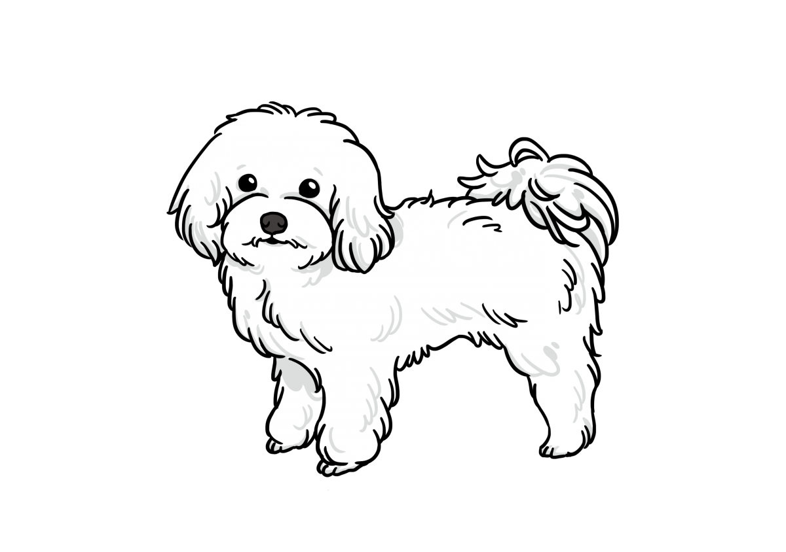
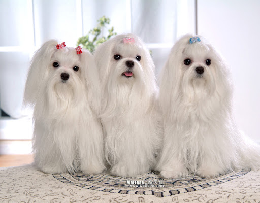

馬爾濟斯

外表
迷人的玩偶體型，無辜大眼，黏人的個性，年齡可至15～25，屬於長壽的家犬
馬爾濟斯成犬體長約40公分，腳長約12公分，體重介於1.5~3.2公斤。背毛為白色的絲狀柔軟細毛，能生得很長，有時會泛有一點點淺黃色。腹部可以看見粉紅色的皮膚。眼睛、鼻頭、腳掌皆為黑色（幼犬期的腳掌為粉紅色）。耳朵呈下垂狀的三角形，警戒時也無法完全豎起。尾巴通常會捲於背上。
性格
馬爾濟斯的性格相當溫馴乖巧，不怕生，很好客，很顧家，很會撒嬌。雖然有時會出現小型犬多有的神經質本能、容易緊張的一面，但基本上仍屬於容易飼養照料的犬種。
歷史
「馬爾濟斯」是因為起源於地中海的馬爾他島而得名。傳說上古時代緋尼基人航行到馬爾他島，他們所帶來的犬種在幾經配種繁衍後，產生了馬爾濟斯種，約有三千年的歷史。據信自古以來馬爾濟斯即為玩賞犬，也是最古老的賞玩犬種之一。在英國，伊麗莎白一世在位時，馬爾濟斯犬特別受到歡迎。據說當著名的蘇格蘭女王瑪麗一世在1587年被處決時身邊仍帶著的寵物就是馬爾濟斯犬，說明了馬爾濟斯在古時歐洲上流社會廣受喜愛的情況。
飼養注意事項
要花費較多時間理毛，
尤其眼睛、嘴巴兩處的毛髮清潔，多觀察眼淚、眼屎是否過多
具有小型犬的神經質特性，比較容易緊張
食量頗大，需要注意體重控制
好發疾病有心臟病（僧帽瓣閉鎖不全）
後腿膝關節十字韌帶易位
